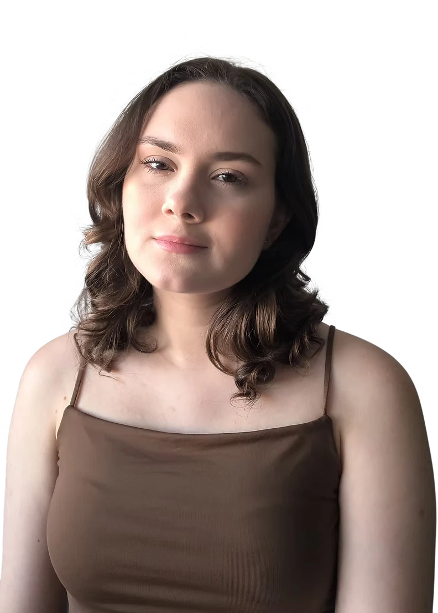
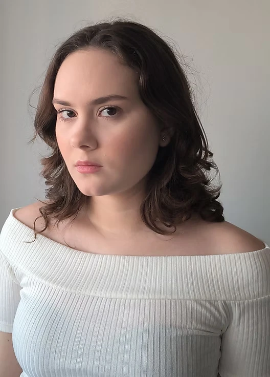
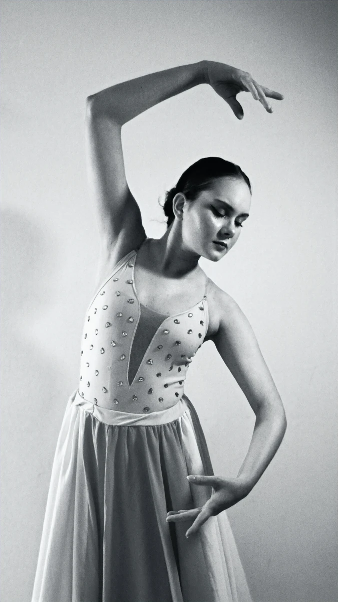

ATRIZ · ACTRESS

ENGLISH · “London”
Bibiana Riet as Maya in “London”, performed in English.
Neighbor & Father | Theatre | 2023
Xandú Quaresma | Theatre | 2022
Clown | Theatre | 2024

ABOUT
I’m drawn to characters with depth, contradiction and humanity — and to stories that let me explore different lives, perspectives and worlds.
GALLERY
Portraits, characters, movementand moments in between.

CONTACT
For casting, representation and professional enquiries.
E-MAIL
PHONE / WHATSAPP
ACTORS ACCESS